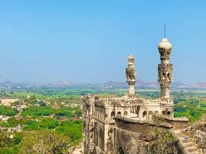

Elgandal Fort
Elgandal Fort, also known as Elagandula Khilla, is a historic fortification located in Karimnagar, Telangana. It dates back to the Kakatiya dynasty and has witnessed several historical events. The fort offers panoramic views of the surrounding area and is a popular destination for history enthusiasts.
Location: Karimnagar, Telangana, India
Activities: Historical tours, photography
Transportation: Accessible by road, located near major bus routes.